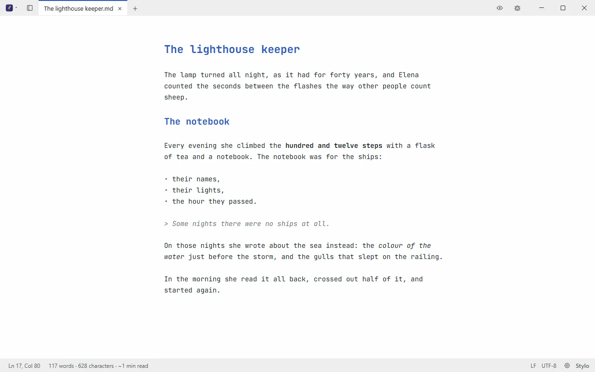

Γράψε όπως σου ταιριάζει
Markdown με τη σελίδα δίπλα, που κυλάει μαζί σου. Ή η προβολή «Γραφή»: μόνο το κείμενο, χωρίς σύμβολα, με όποιο πλάτος γραμμής θέλεις, εστίαση στην παράγραφο ή κύλιση σαν γραφομηχανή.


Γράφεις σε απλά αρχεία .md με τη μορφοποιημένη σελίδα δίπλα, ή σε μια καθαρή προβολή χωρίς σύμβολα.
Σημειώσεις, μαθηματικά, διαγράμματα και PDF σε μια μικρή, γρήγορη εφαρμογή. Χωρίς λογαριασμό, χωρίς συνδρομή, χωρίς
telemetry.
Windows 10 και 11, 64-bit · περίπου 10 MB · χωρίς δικαιώματα διαχειριστή
Ubuntu, Debian, Fedora και άλλα, 64-bit · AppImage, .deb ή .rpm

Markdown με τη σελίδα δίπλα, που κυλάει μαζί σου. Ή η προβολή «Γραφή»: μόνο το κείμενο, χωρίς σύμβολα, με όποιο πλάτος γραμμής θέλεις, εστίαση στην παράγραφο ή κύλιση σαν γραφομηχανή.

Άνοιξε έναν φάκελο και όλα τα .md του είναι σε μια στήλη. Αναζήτηση σε όλα τα αρχεία,
συνδέσεις [[σαν αυτή]] ανάμεσα σε σημειώσεις, και ποιες σημειώσεις δείχνουν στην
τρέχουσα.

PDF με ένα κλικ, Word (.docx), HTML, και μορφοποιημένο κείμενο για email ή Teams.

Ανοιχτά και σκούρα θέματα (αυτό είναι το Mint), δικές σου γραμματοσειρές, συντομεύσεις που αλλάζουν, και ελληνικά ή αγγλικά στο interface.

Stylo_…_x64-setup.exe από την
τελευταία έκδοση.
Windows 10 και 11, 64-bit · περίπου 10 MB · χωρίς δικαιώματα διαχειριστή
Ubuntu, Debian, Fedora και άλλα, 64-bit · AppImage, .deb ή .rpm
Την πρώτη φορά, το SmartScreen μπορεί να γράψει «Τα Windows προστάτευσαν τον υπολογιστή σας». Πάτα Περισσότερες πληροφορίες και μετά Εκτέλεση οπωσδήποτε.
Ο installer δεν έχει ψηφιακή υπογραφή, γιατί το πιστοποιητικό κοστίζει κάθε χρόνο και το Stylo είναι δωρεάν. Τα Windows προειδοποιούν για κάθε εφαρμογή χωρίς υπογραφή που δεν έχουν δει ακόμα πολλοί.
Κάθε έκδοση έχει ένα .sha256 δίπλα στον installer. Στο PowerShell, στον φάκελο λήψεων, αυτό γράφει
True. Βάλε τον αριθμό της έκδοσης που κατέβασες.
(Get-FileHash .\Stylo_1.0.0_x64-setup.exe).Hash -eq (Get-Content .\Stylo_1.0.0_x64-setup.exe.sha256).Split(' ')[0]Ναι. Χωρίς διαφημίσεις, λογαριασμό ή πληρωμένη έκδοση. Είναι ένα προσωπικό, μη κερδοσκοπικό project. Μπορείς να το δώσεις και σε άλλους, όπως είναι· δεν επιτρέπεται να πουληθεί. Δες την άδεια (στα αγγλικά).
Ναι. Η άδεια επιτρέπει προσωπική, εκπαιδευτική και επαγγελματική χρήση.
Ναι. Το internet χρειάζεται μόνο για να βρει νέες εκδόσεις.
Για Linux ναι, σε beta: δες Linux (beta). Για Mac όχι.
Όχι, ο κώδικας είναι ιδιωτικός. Το Stylo όμως βασίζεται σε ανοιχτό λογισμικό, που αναφέρεται με τις άδειές του στις άδειες τρίτων.
Όταν ανοίγει, ρωτά το GitHub αν υπάρχει νέα έκδοση και σου προτείνει να την εγκαταστήσεις. Τίποτα δεν μπαίνει χωρίς να συμφωνήσεις. Ο έλεγχος κλείνει από Ρυθμίσεις → Γενικά.
Τα κείμενά σου είναι απλά αρχεία .md, όπου τα αποθηκεύεις. Ρυθμίσεις, πρόχειρα, ιστορικό εκδόσεων
και ένα μικρό αρχείο σφαλμάτων είναι στο %LOCALAPPDATA%\gr.stylo.app. Τίποτα δεν ανεβαίνει πουθενά.
Ρυθμίσεις των Windows → Εφαρμογές → Εγκατεστημένες εφαρμογές → Stylo → Κατάργηση εγκατάστασης. Θα σε ρωτήσει αν
θα σβήσει και ρυθμίσεις, πρόχειρα και ιστορικό. Τα αρχεία .md σου δεν τα αγγίζει.
Πάτα το εικονίδιο με το έντομο πάνω δεξιά στο Stylo. Ανοίγει ένα έτοιμο issue στο GitHub, που το διαβάζεις και το στέλνεις εσύ. Οι ιδέες είναι ευπρόσδεκτες στη σελίδα των issues.
Καμία καταγραφή χρήσης, κανένας λογαριασμός, καμία αναφορά σφαλμάτων που φεύγει μόνη της.
Το μόνο που κάνει μόνο του στο δίκτυο είναι να ρωτά το GitHub για νέα έκδοση. Κλείνει από Ρυθμίσεις → Γενικά.
Η «Αναφορά προβλήματος» ετοιμάζει ένα issue με την έκδοση του Stylo και των Windows, χωρίς ονόματα ή περιεχόμενο αρχείων. Τα σφάλματα γράφονται μόνο στον υπολογιστή σου.
Χωρίς cookies, analytics ή trackers. Φιλοξενείται στο GitHub Pages.
Ό,τι δείχνουν τα έγγραφά σου στο web (links, εικόνες) ανοίγει ή φορτώνει από εκεί, όπως σε κάθε browser.